NUMEN — Anime shot collection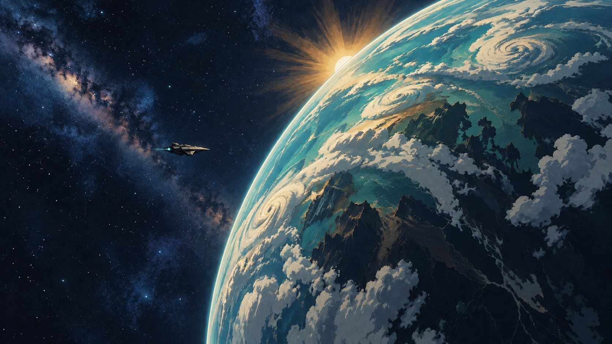
01 / Galaxy opening
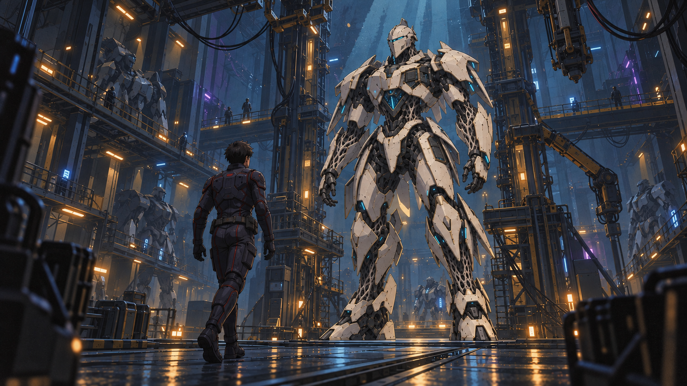
02 / First discovery
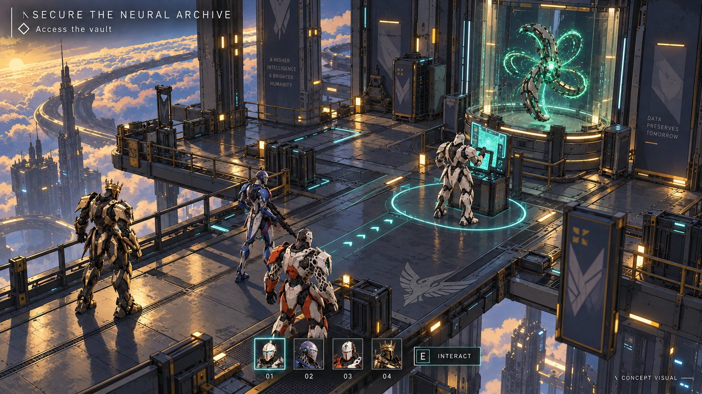
03 / Mission preview
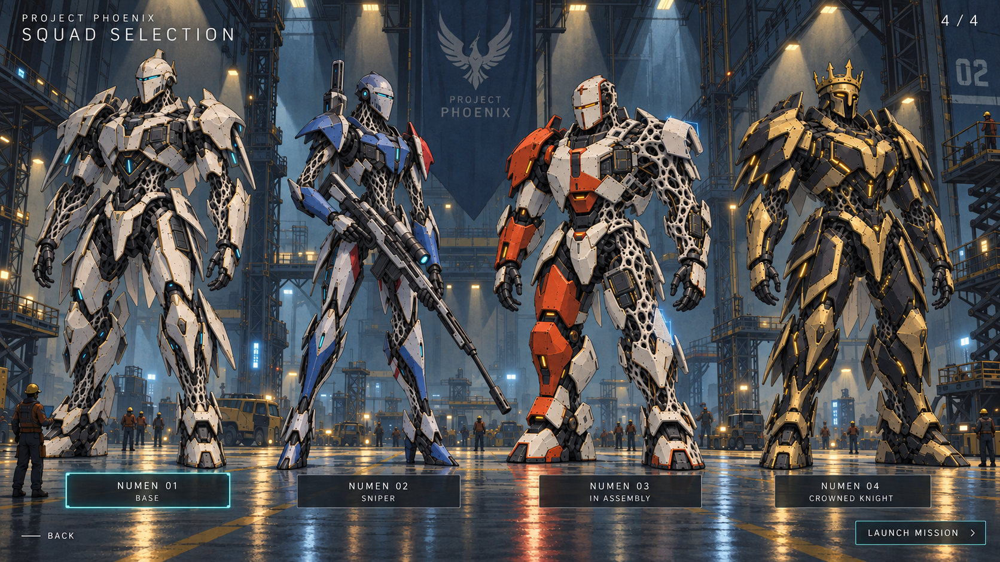
04 / Squad selection
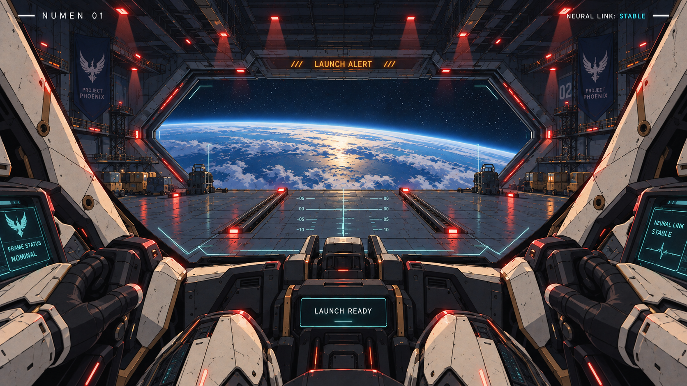
05 / Cockpit departure
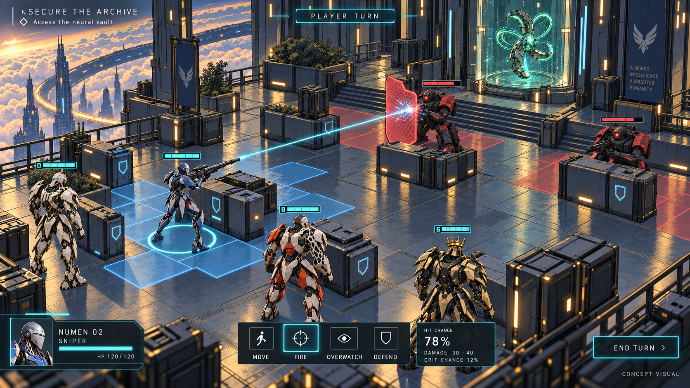
06 / Tactical battle
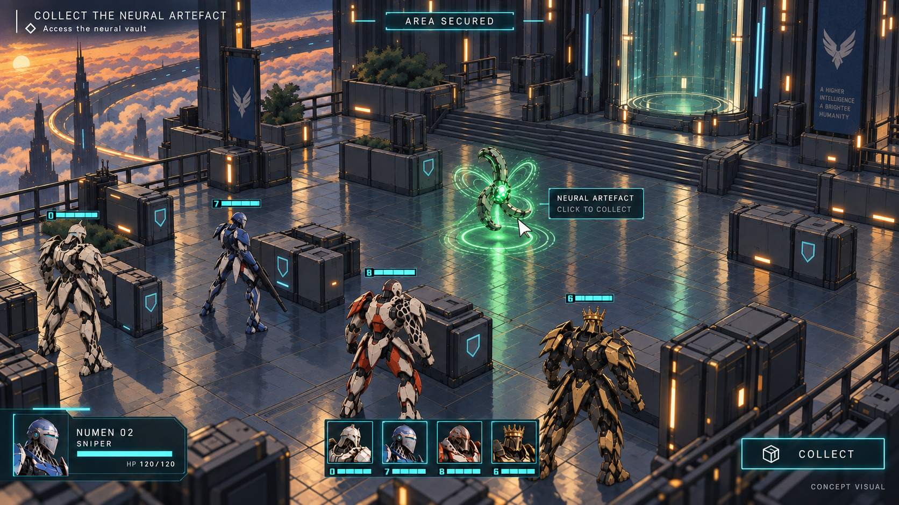
07 / Artefact collection
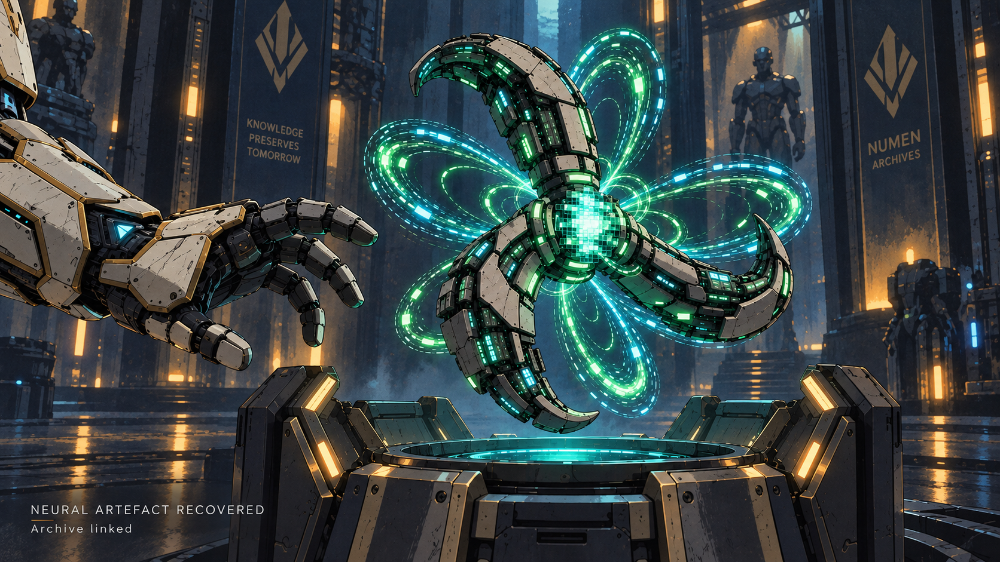
08 / Artefact recovery
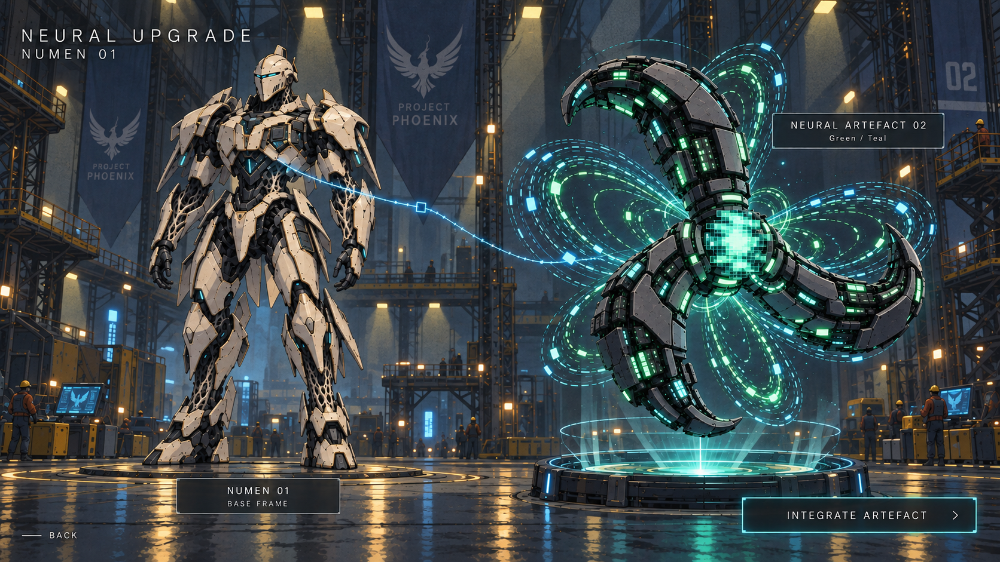
09 / Upgrade selection
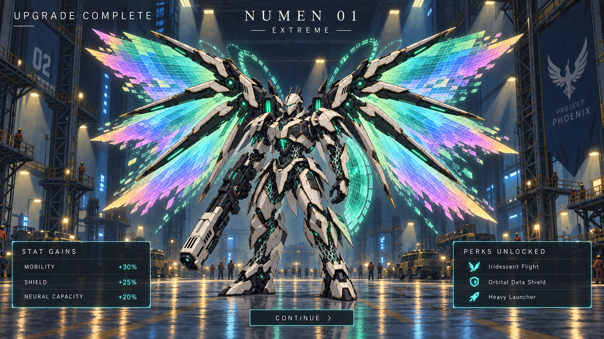
10 / Extreme upgrade
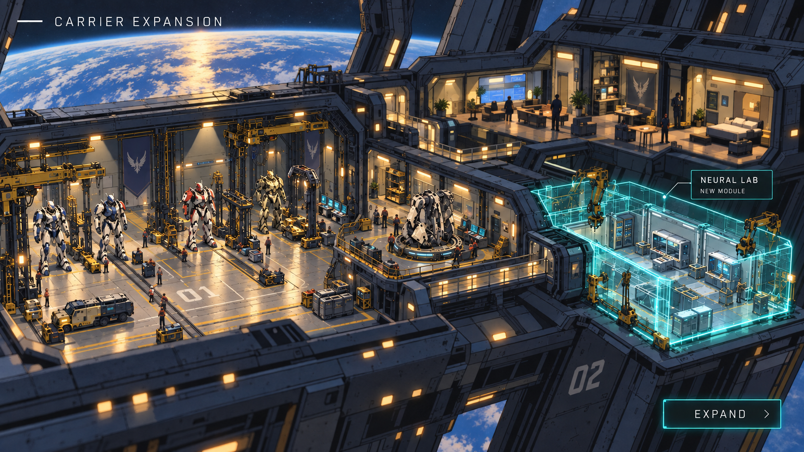
11 / Carrier expansion
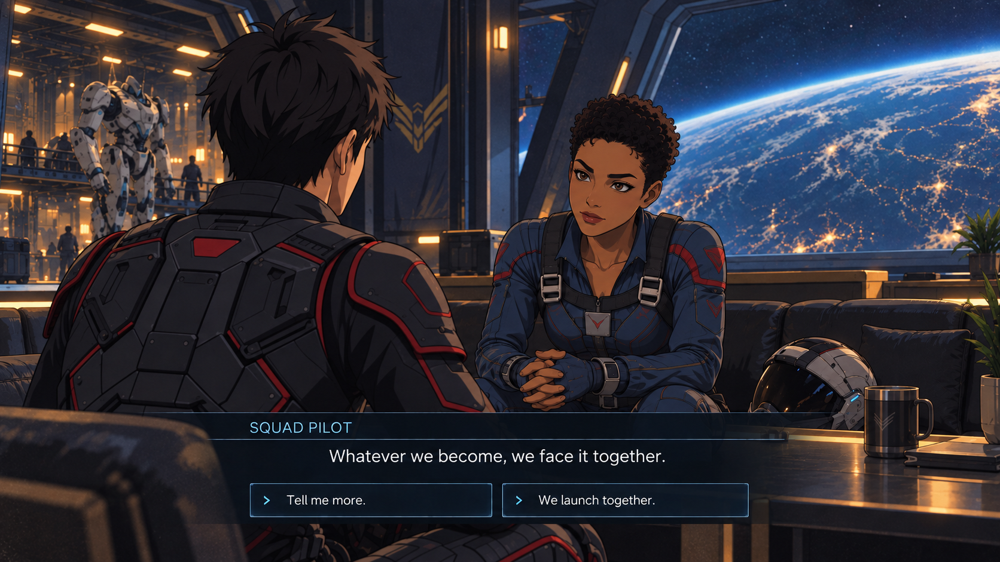
12 / Pilot dialogue
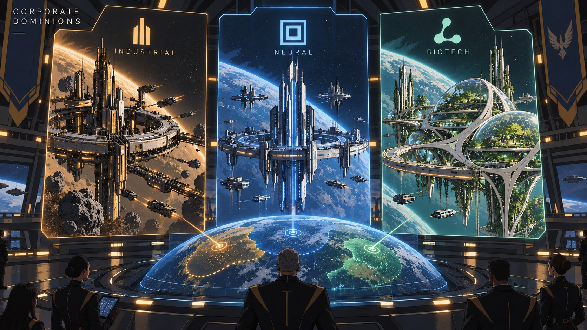
13 / Corporate factions
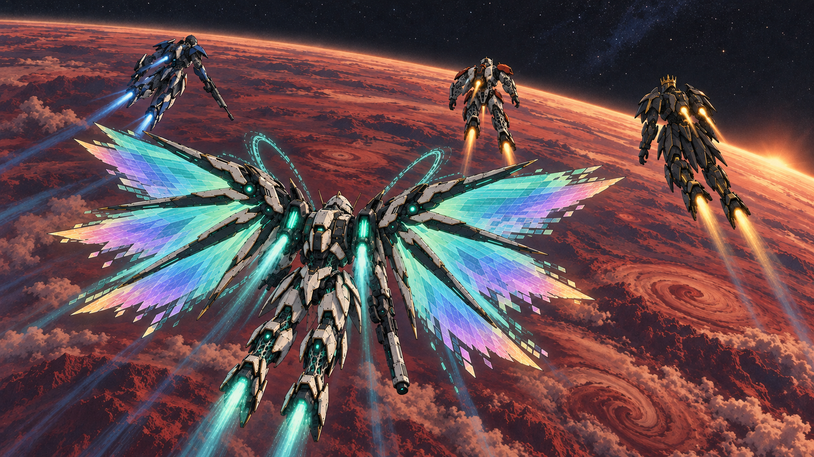
14 / Final squad flight